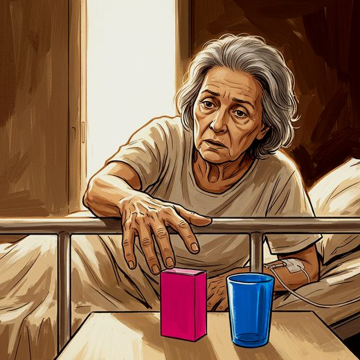

Ferramenta desta aula
Delirium — 4AT. Roda no navegador, sem cadastro.
Consulta rápida à beira do leito
Condutas, doses e interações.
Referências da aula · 11
- Hao X, Zhang H, Zhao X, Peng X, Li K. Risk factors for hospitalization-associated disability among older patients: a systematic review and meta-analysis. Ageing Res Rev. 2024;101:102516. PMID 39332713.PubMed
- Quek HW, Reus Perello X, Lee K, et al. Deprescribing in older people: a clinical practice guideline summary. Med J Aust. 2026;224(4):e70174.
- Whitebook. Delirium. PEBMED; acesso em outubro de 2026.
- Freitas EV, Py L, organizadores. Tratado de Geriatria e Gerontologia. 5ª ed. Rio de Janeiro: Guanabara Koogan; 2022.
- Covinsky KE, Pierluissi E, Johnston CB. Hospitalization-associated disability: “She was probably able to ambulate, but I’m not sure”. JAMA. 2011;306(16):1782-93. PMID 22028354.PubMed
- Kortebein P, Ferrando A, Lombeida J, Wolfe R, Evans WJ. Effect of 10 days of bed rest on skeletal muscle in healthy older adults. JAMA. 2007;297(16):1772-4. PMID 17456818.PubMed
- Inouye SK, Bogardus ST Jr, Charpentier PA, et al. A multicomponent intervention to prevent delirium in hospitalized older patients. N Engl J Med. 1999;340(9):669-76. PMID 10053175.PubMed
- Inouye SK, Charpentier PA. Precipitating factors for delirium in hospitalized elderly persons. JAMA. 1996;275(11):852-7. PMID 8596223.PubMed
- Saint S, Lipsky BA, Goold SD. Indwelling urinary catheters: a one-point restraint? Ann Intern Med. 2002;137(2):125-7. PMID 12118969.PubMed
- Dorner B, Friedrich EK. Position of the Academy of Nutrition and Dietetics: individualized nutrition approaches for older adults: long-term care, post-acute care, and other settings. J Acad Nutr Diet. 2018;118(4):724-35.
- American Geriatrics Society Ethics Committee and Clinical Practice and Models of Care Committee. American Geriatrics Society feeding tubes in advanced dementia position statement. J Am Geriatr Soc. 2014;62(8):1590-3. PMID 25039796.PubMed
Documentos oficiais
Leis e publicações do Ministério da Saúde sobre o cuidado da pessoa idosa, de acesso livre.
Abrir os documentos